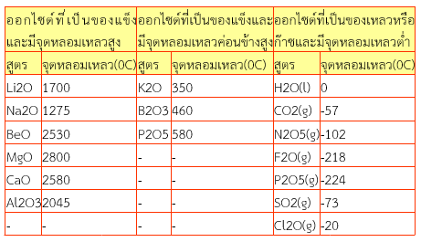
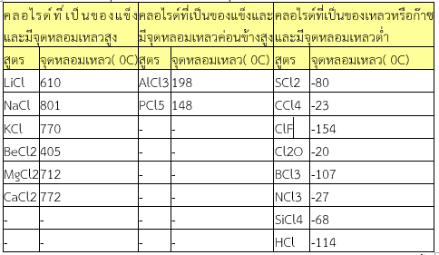
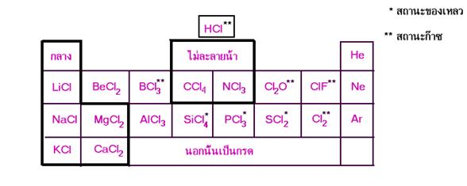
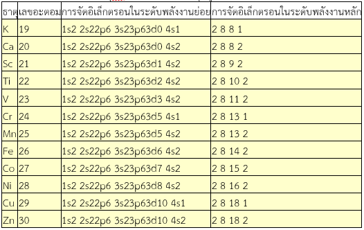
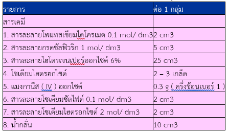
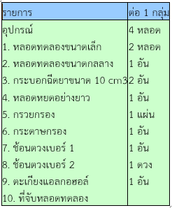
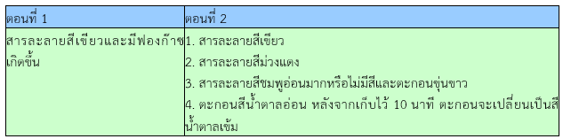
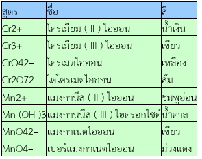
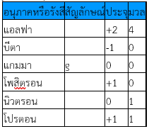

Elements and Compounds
หน้าแรก
เรียนรู้ธาตุและสารประกอบ
ตารางธาตุ
ห้องทดลอง
เกี่ยวกับ
สมบัติของธาตุและสารประกอบ
Tweet
1 สารประกอบออกไซด์และสารประกอบคลอไรด์
สารประกอบออกไซด์ หมายถึง สารประกอบที่เกิดจากธาตุออกซิเจนรวมกับธาตุอื่น ๆ ซึ่งอาจจะเป็นโลหะหรืออโลหะก็ได้ เช่น Na2O, P2O3, NO2
การเตรียมสารประกอบออกไซด์ อาจจะทำได้โดยนำออกซิเจนมาเผารวมกับธาตุต่าง ๆ เช่น
4Na (s) + O2(g) --------------> 2Na2O (s)
2Ca(s) + O2(g) --------------> 2CaO (s)
4Al(s) + O2(g) ---------------> 2Al2O3(s)
C(s) + O2(g) --------------> CO2(g)
สมบัติบางประการของสารประกอบออกไซด์
จากการศึกษาสมบัติบางประการของสารประกอบออกไซด์ของ 20 ธาตุแรก เกี่ยวกับสูตรของสารประกอบ จุดหลอมเหลว สถานะ การละลายน้ำ และความเป็นกรด - เบสของสารละลายได้ผลสรุปดังนี้
1. เมื่อใช้ความเป็นโลหะและอโลหะเป็นเกณฑ์ จะแบ่งสารออกได้เป็น 2 กลุ่มดังนี้
ก . ออกไซด์ของโลหะ เช่น Li2O BeO Na2O MgO Al2O3K2O CaO
ข . ออกไซด์ของอโลหะ เช่น H2O CO2N2O5F2O P2O5SO2Cl2O
2. การแบ่งกลุ่มย่อยอาจจะใช้สมบัติความเป็นกรด - เบสของสารละลาย เช่น
ก . ออกไซด์ของโลหะ
- สารละลายเป็นกรด
- สารละลายเป็นเบส ได้แก่ Li2O Na2O MgO K2O และ CaO
- สารละลายเป็นกลาง
- พวกไม่ละลายน้ำ ได้แก่ BeO Al2O3B2O3SiO2
ข . ออกไซด์ของอโลหะ
- สารละลายเป็นกรด ได้แก่ CO2N2O5F2O P2O5SO2และ Cl2O
- สารละลายเป็นเบส
- สารละลายเป็นกลาง ได้แก่ H2O
- พวกไม่ละลายน้ำ
3. เมื่อใช้จุดหลอมเหลวเป็นเกณฑ์จะได้กลุ่มย่อยดังนี้

สารประกอบคลอไรด์
สารประกอบคลอไรด์หมายถึง สารประกอบธาตุคู่ระหว่างธาตุคลอรีนกับธาตุอื่นๆ เช่น NaCl CaCl2HCl และ CCl4เป็นต้น
สารประกอบคลอไรด์สามารถเตรียมได้โดยตรง โดยผ่านก๊าซคลอรีนแห้งไปบนธาตุที่กำลังร้อน ดังนั้นในขั้นแรกจึงต้องเตรียมก๊าซคลอรีนก่อนแล้วจึงผ่านก๊าซคลอรีนที่ได้นั้นลงไปบนธาตุที่ร้อนดังกล่าว
การเตรียมก๊าซคลอรีนในห้องปฏิบัติการ ใช้ปฏิกิริยาระหว่างโปตัสเซียมเพอร์แมงกาเนต (KMnO 4) กับก๊าซไฮโดรคลอริก(HCl) เข้มข้นประมาณ 10 mol/dm 3 ซึ่งเกิดปฏิกิริยาคือ KMnO4(s) +16 HCl (aq) --->2KCl (aq)+ 2MnCl2(aq) +8H2(l) + 5Cl2(g)
หมายเหตุ: ก๊าซคลอรีนเป็นก๊าซพิษ ดังนั้นการเตรียมจึงต้องทำอย่างระมัดระวัง
สมบัติของสารประกอบคลอไรด์
1. การแตกตัวเป็นไอออนทดสอบได้โดยใช้สารละลาย AgNO 3 ซึ่งถ้ามีCl - จะเกิดตะกอนของ AgCl จัดว่าเป็นวิธีทดสอบคลอไรด์ไอออนวิธีหนึ่ง จากสมการ Ag +(aq) + Cl-(aq) -------> AgCl (s)
2. แบ่งสารประกอบคลอไรด์ออกเป็น 2 กลุ่มใหญ่ๆ คือ คลอไรด์ของโลหะและคลอไรด์ของอโลหะดังนี้
ก . คลอไรด์ของโลหะ ได้แก่ LiCl BeCl2NaCl MgCl2AlCl3KCl และ CaCl2
ข . คลอไรด์ของอโลหะ ได้แก่ HCl BCl3CCl4NCl3Cl2O ClF PCl5SiCl4และ SCl2
3. เมื่อใช้ความเป็นกรด - เบสของสารละลาย จะแบ่งกลุ่มย่อยได้ดังนี้
ก . คลอไรด์ของโลหะ
- สารละลายเป็นกรด ได้แก่ AlCl3BeCl2
- สารละลายเป็นกลาง ได้แก่ LiCl NaCl MgCl2KCl และ CaCl2
- สารละลายเป็นเบส
ข . คลอไรด์ของอโลหะ
- สารละลายเป็นกรด ได้แก่ HCl BCl3Cl2O ClF PCl5SiCl4และ SCl2
- สารละลายเป็นกลาง
- สารละลายเป็นเบส
4. เมื่อใช้สถานะและจุดหลอมเหลว จะแบ่งกลุ่มย่อยได้ดังในตาราง

เมื่อนำคลอไรด์มาจัดรวมกันเป็นหมวดหมู่ หมวดหมู่เดียวกันตามตารางธาตุ จะได้ดังนี้

2 สมบัติของธาตุแทรนซิชัน
ธาตุแทรนซิชันมีสมบัติคล้ายคลึงกันทั้งในแนวนอนและแนวดิ่ง ซึ่งทุกธาตุต่างเป็นพวกโลหะ แต่มีความแตกต่างจากโลหะหมู่ IA และหมู่ IIA หลายประการดังนี้
1.ธาตุแทรนซิชัน เป็นโลหะซึ่งส่วนใหญ่มีจุดหลอมเหลว จุดเดือด และความหนาแน่นสูง
2. เวเลนต์อิเล็กตรอนของธาตุแทรนซิชันในคาบที่ 4 เท่ากับ 2 ยกเว้นโครเมียม กับทองแดง ซึ่งมีเวเลนซ์อิเล็กตรอนเท่ากับ 1
3. อิเล็กตรอนในระดับพลังงานถัดเข้ามานับจากระดับพลังงานของเวเลนซ์อิเล็กตรอน ส่วนใหญ่มีจำนวนไม่เท่ากัน ส่วนของธาตุหมู่ IA และหมู่ IIA ในคาบเดียวกันมีจำนวนอิเล็กตรอนในระดับพลังงานถัดเข้ามาเท่ากับ 8
4.รัศมีอะตอมมีขนาดใกล้เคียงกันและมีแนวโน้มลดลงเมื่อเลขอะตอมเพิ่มขึ้นตามคาบ
5. ความหนาแน่นมีแนวโน้มเพิ่มขึ้นตามคาบ
6.ธาตุแทรนซิชันมีสมบัติคล้ายคลึงกันตามคาบมากกว่าธาตุอื่นๆ ในตารางธาตุ นอกจากสมบัติที่ธาตุแทรนซิชันแตกต่างจากโลหะหมู่ IA และหมู่ IIA แล้ว ธาตุแทรนซิชันยังมีสมบัติพิเศษที่เด่นชัดอีกหลายประการ ดังนี้
1.โลหะแทรนซิชันเป็นตัวนำไฟฟ้าและนำความร้อนที่ดี โดยเฉพาะอย่างยิ่งธาตุในหมู่ IB คือ ทองแดง เงิน และทอง
2.รัศมีอะตอมของธาตุแทรนซิชันโดยทั่วไปมีขนาดลดลงเมื่อเลขอะตอมเพิ่มขึ้น แต่รัศมีอะตอมของธาตุต่างๆ จากโครเมียม (Cr) ถึงทองแดง (Cu) มีขนาดใกล้เคียงกันมาก ทั้งนี้เนื่องจากแม้ว่าธาตุในแถวเดียวกันจะมีประจุในนิวเคลียสเพิ่มขึ้นซึ่งทำให้หมอกอิเล็กตรอนเล็กลงก็ตาม แต่อิเล็กตรอนในระดับพลังงานย่อยมีจำนวนมากขึ้นและมีแรงต้านกับการหดขนาดของหมอกอิเล็กตรอน จึงทำให้ขนาดอะตอมของธาตุแทรนซิชันไม่ค่อยเปลี่ยนแปลงมากนัก และจะลดลงอย่างช้า ๆ เท่านั้น
3.พลังงานไอออไนเซชันลำดับที่ 1 ที่เปลี่ยนแปลงอย่างไม่สม่ำเสมอเป็นผลจากการต้านกันระหว่างประจุของนิวเคลียสที่เพิ่มขึ้น กับการเพิ่มอิเล็กตรอนในระดับพลังงานย่อย
4. มีเลขออกซิเดชันได้หลายค่า ยกเว้น IIIB และหมู่ IIB ซึ่งเกิดสารประกอบที่มีเลขออกซิเดชัน +3 และ +2 ตามลำดับ ส่วนธาตุแทรนซิชันอื่น ๆ สามารถแสดงเลขออกซิเดชันร่วมกันเป็นอย่างน้อย
5.สารประกอบส่วนมากของธาตุแทรนซิชันมีสี (ยกเว้นหมู่ IIIB)
6.มีแนวโน้มเกิดสารประกอบเชิงซ้อน (Complex compounds) ได้ง่ายกว่าธาตุหมู่ IA และหมู่ IIA แสดงสมบัติของธาตุแทรนซิชันเทียบกับธาตุหมู่IA และ IIA
3 สารประกอบของธาตุแทรนซิชัน
สารเคมี เช่น KMnO4 และ CuSO4 เป็นสารประกอบของธาตุแทรนซิชัน สารประกอบของธาตุในกลุ่มนี้แตกต่างจากสารประกอบของโลหะในกลุ่ม A อย่างไร จากการศึกษาสารประกอบของโครเมียมและแมงกานีสจะได้ดังนี้จากผลการทดลอง ทำให้ทราบว่าโครเมียมและแมงกานีสมีเลขออกซิเดชันได้หลายค่า
นอกจากนี้สารประกอบของทั้งโครเมียมและแมงกานีสที่มีเลขออกซิเดชันแตกต่างกันจะมีสีแตกต่างกันด้วย เช่นโครเมียมที่มีเลขออกซิเดชัน +2 และ +3 จะมีสีฟ้าและเขียวตามลำดับ ส่วนแมงกานีสที่มีเลข
ออกซิเดชัน+3 +6 และ +7 จะมีสีน้ำตาล สีเขียว และสีม่วงแดงตามลำดับ และจะพบว่าโครเมียมเกิดเป็นไอออนที่มีประจุได้ตั้งแต่ +1 ถึง +6 โดยที่การเกิดเป็น Cr+ อะตอมจะเสีย 1 อิเล็กตรอนในระดับพลังงานนอกสุดก่อนคือ 4s เมื่อเกิดเป็นไอออนที่มีประจุสูงขึ้น อะตอมจะเสียอิเล็กตรอนเพิ่มขึ้นซึ่งเป็นอิเล็กตรอนที่อยู่ในระดับพลังงาน 3d การที่โครเมียมสามารถให้อิเล็กตรอนในระดับพลังงานที่ถัดเข้าไปจากระดับพลังงานนอกสุดและเกิดเป็นไอออนที่เสถียร ทำให้โครเมียมมีเลขออกซิเดชันได้หลายค่า ธาตุแทรนซิชันอื่น ๆ ก็สามารถให้อิเล็กตรอนในลักษณะเดียวกับโครเมียมและมีเลขออกซิเดชันได้หลายค่าจึงเกิดสารประกอบได้หลายชนิด
4 สมบัติของธาตุแทรนซิชัน
1. การจัดอิเล็กตรอนของธาตุแทรนซิชัน โลหะในคาบที่ 4 มีเลขอะตอม 21 ถึง 30 จะมีเวเลนซ์อิเล็กตรอนเท่ากับ 2 ยกเว้นCrและCuมีเวเลนซ์อิเล็กตรอนเท่ากับ 1 คล้ายกับของธาตุหมู่1AและIIAซึ่งการจัดอิเล็กตรอนของธาตุหมู่IAและIIAอิเล็กตรอนที่เพิ่มขึ้นมาจะจัดเข้าอยู่ในระดับพลังงานย่อย 4s–orbitalแต่ธาตุแทรนซิชันจะจัดอิเล็กตรอนเพิ่มใน 3d–orbital
ก.การจัดอิเล็กตรอนของCrคือ1s2 , 2s22p6 , 3s23p43d5 , 4s1ซึ่งการจัดลักษณะเช่นนี้เป็นลักษณะhalf filled electronic configurationโดยระดับพลังงานย่อยของ 3d–orbitalมีอิเล็กตรอนบรรจุอยู่ออร์บิทัลละ 1 อิเล็กตรอน
ข.การจัดอิเล็กตรอนของCuคือ1s2 , 2s22p6 , 3s23p63d10 , 4s1ซึ่งการจัดลักษณะเช่นนี้ทำให้ระดับพลังงานย่อยของ 3d–orbitalมีอิเล็กตรอนบรรจุอยู่เต็มออร์บิทัล ซึ่งเสถียรมากกว่าการจัดแบบ1s2 , 2s22p6 , 3s23p63d9 , 4s2
ค.โลหะแทรนซิชันมีเลขออกซิเดชันได้หลายค่า เนื่องจากการจัดอิเล็กตรอนในระดับพลังงานย่อย3d–orbitalเป็นผลให้สามารถให้อิเล็กตรอนได้หลายตัว ซึ่งต่างจากหมู่IAและIIAจะมีเลขออกซิเดชันได้เพียงค่าเดียวคือ +1 และ +2
ตารางแสดงการจัดอิเล็กตรอนของธาตุแทรนซิชันเทียบกับธาตุหมู่IA และIIA

2. ธาตุแทรนซิชันในคาบที่ 4 มีสมบัติหลายประการคล้ายกับธาตุKและCaเช่น พลังงานไอออไนเซชันลำดับที่ 1 และอิเล็กโทรเนกาติวิตีมีค่าต่ำ แต่จุดหลอมเหลว จุดเดือด ความหนาแน่นมีค่าสูง และสูงมากกว่าหมู่IAและIIA
ก. ดหลอมเหลว จุดเดือดของโลหะแทรนซิชันสูงกว่าโลหะหมู่IA และIIAมาก ยกเว้นZnมีจุดหลอมเหลวและจุดเดือดใกล้เคียงกับหมู่IA และIIAแต่จุดหลอมเหลวและจุดเดือดของโลหะแทรนซิชันด้วยกันเองมีค่าใกล้เคียงกัน จุดเดือดของโลหะขึ้นอยู่กับพันธะโลหะ และความแข็งแรงของพันธะโลหะจะแปรผกผันกับขนาดอะตอม อะตอมที่มีขนาดเล็กจะมีพันธะโลหะแข็งแรงมากกว่า
ข. ค่าIE1 ของโลหะแทรนซิชันจะสูงกว่าหมู่IAและ IIAแต่แนวโน้มของโลหะแทรนซิชันจะมีค่าIE1ใกล้เคียงกัน
ค. ขนาดอะตอมของโลหะแทรนซิชันจะเล็กกว่าโลหะหมู่IAและIIAแต่มีขนาดอะตอมใกล้เคียงกันเอง
การศึกษาสมบัติของสารประกอบของโครเมียมและแมงกานีส
การทดลอง
การศึกษาสมบัติของสารประกอบของโครเมียมและแมงกานีส
โพแทสเซียมไดโครเมต (K2Cr2O7)
จุดประสงค์การทดลอง
1. ทำการทดลองเพื่อศึกษาสมบัติบางประการของสารประกอบของธาตุโครเมียมและแมงกานีสได้
2. บอกเหตุผลที่ธาตุโครเมียมและแมงกานีสเกิดสารประกอบได้หลายชนิดและมีสีต่างกันได้
3. บอกชื่อสารประกอบหรือไอออนของโครเมียมและแมงกานีสจากสีของสารได้
สารเคมีและอุปกรณ์


การเตรียมการล่วงหน้า
1. เตรียมสารละลายโพแทสเซียมไดโครเมต 0.1 mol/ dm350 cm3โดยใช้โพแทสเซียมไดโครเมต 1.47 g ละลายในน้ำ แล้วทำให้มีปริมาตรเป็น 50 cm3
2. เตรียมสารละลายกรดซัลฟิวริก 1 mol/ dm3 100 cm3 โดยใช้สารละลายกรดซัลฟิวริกเข้มข้น 18 mol/ dm3 5.6 cm3 ใส่ลงในน้ำ 60 cm3 เติมน้ำจนมีปริมาตรเป็น 100 cm3
3. เตรียมสารละลายโซเดียมไฮดรอกไซด์ 2 mol/ dm3 50 cm3 โดยใช้โซเดียมไฮดรอกไซด์ 4 g ละลายในน้ำแล้วทำให้มีปริมาตรเป็น 50 cm3
4. เตรียมสารละลายโซเดียมซัลไฟด์ 0.1 mol/ dm3 50 cm3 โดยใช้โซเดียมซัลไฟด์ 0.4 g ละลายในน้ำแล้วทำให้มีปริมาตรเป็น 50 cm3
อภิปรายก่อนการทดลองและวิธีทดลอง
มีข้อแนะนำเกี่ยวกับการทดลองดังนี้
1. การทดลองตอนที่ 1 แนะนำให้นักเรียนเติม H2O2พร้อมกับเขย่าจนเห็นการเปลี่ยนแปลงอย่างชัดเจนก่อนจะทำการทดลองขั้นต่อไป
2. การทดลองตอนที่ 2 แนะนำการเผาโซเดียมไฮดรอกไซด์กับแมงกานีส ( IV ) ออกไซด์ โดยเผาจนหลอมเหลว และเผาต่อไปจนเกิดสารสีเขียวจึงหยุดเผา ปล่อยให้เย็นแล้วจึงเติมน้ำ
วิธีทดลอง
ตอนที่ 1
ใส่สารละลาย K2Cr2O7 เข้มข้น 0.1 mol/dm3 จำนวน 10 cm3 ในหลอดทดลองขนาดเล็ก เติมสารละลาย H2SO4 เข้มข้น 1 mol/dm3 ลงไป 1 cm3 เขย่าจนเป็นเนื้อเดียวกันแล้วเติมสารละลาย H2O2 เข้มข้นร้อยละ 6 ลงไป 1 cm3 เขย่าและสังเกตการเปลี่ยนแปลง
ตอนที่ 2
1. ใส่ NaOH ประมาณ 0.5 g ลงในหลอดทดลองขนาดกลาง และใส่ MnO2 ลงไปประมาณ 0.3 g เผาจนสังเกตเห็นการเปลี่ยนสี ตั้งไว้ให้เย็นแล้วเติมน้ำกลั่นลงไป 5 cm3 เขย่าและตั้งไว้จนส่วนที่ไม่ละลายตกตะกอน สังเกตสีของสารละลาย
2. นำสารละลายจากข้อ 1 ประมาณ 4 cm3 ใส่ในหลอดทดลองขนาดกลางเติมสารละลาย H2SO4 เข้มข้น 1 mol/dm3 ลงไปประมาณ 2 cm3 เขย่าและสังเกตการเปลี่ยนแปลง
3. นำสารละลายจากข้อ 2 มาเติมสารละลาย NaS เข้มข้น 0.1 mol/dm3 ทีละหยดพร้อมกับเขย่าจนตะกอนไม่เกิดเพิ่มขึ้นอีก สังเกตสีของตะกอนและสารละลาย กรองและเก็บสารละลายไว้ทำการทดลองต่อไป
4. นำสารละลายจากข้อ 3 ประมาณ 2 cm3 มาเติมสารละลาย NaOH เข้มข้น 2 mol/dm3 ลงไปทีละหยดพร้อมกับเขย่าจนไม่เกิดตะกอนเพิ่มขึ้นอีก สังเกตสีของตะกอนที่เกิดขึ้นในตอนแรกและหลังจากที่เขย่าแล้ว ประมาณ 2 นาที
ผลการทดลอง

อภิปรายหลังการทดลอง
ให้นักเรียนเปรียบเทียบสีของสารละลายจากการทดลองกับสีของสารประกอบหรือไอออนในตารางต่อไปนี้
ตารางแสดงสีของสารประกอบและสีของไอออนในน้ำของโครเมียมและแมงกานีส

7 สารประกอบเชิงซ้อนและลิแกนด์
โลหะแทรนซิชันมีโครงสร้างทางอิเล็กตรอนที่แตกต่างไปจากโลหะหมู่ที่ IA และหมู่ IIA คือสามารถรวมกับไอออน หรือหมู่ไอออน โมเลกุลหรือสารบางชนิดที่มีอิเล็กตรอนคู่ว่างอยู่ เกิดเป็นสารประกอบโคเวเลนต์ที่เรียกว่า สารประกอบโคออดิเนชัน หรือสารประกอบเชิงซ้อน (Coordination complex, Complex compound)
สารประกอบเชิงซ้อนหรือไอออนเชิงซ้อน โดยทั่ว ๆ ไป ประกอบด้วยอะตอมหรือไอออนที่อยู่ตรงกลางซึ่งส่วนใหญ่เป็นโลหะเรียกว่า นิวเคลียสอะตอม ( Nuclear atom ) มีกลุ่มของไอออนหรือโมเลกุลต่าง ๆ ห้อมล้อมอยู่ ไอออนหรือโมเลกุลที่ห้อมล้อมอยู่นี้เรียกว่า ลิแกนต์ ( ligsnd) โดยปกติพันธะระหว่างอะตอมกลางกับลิแกนต์เป็นพันธะโคออร์ดิเนตโคเวเลนต์ ดังนั้นจึงเรียกสารประกอบเซิงซ้อนเหล่านี้อีกขื่อหนึ่งว่า สารประกอบโคออดิเนชัน เช่น MnO4- มีแมงกานีสเป็นอะตอมกลาง มีออกซิเจนล้อมรอบ Fe(CN)63- มีเหล็กเป็นอะตอมกลางและมีไซยาไนด์ไอออนล้อมรอบ ดังนี้
ธาตุแทรนซิชันส่วนใหญ่เกิดสารประกอบเชิงซ้อนหรือไอออนเชิงซ้อนที่มีสีต่าง ๆ กัน ธาตุแทรนซิชันธาตุหนึ่งอาจเกิดสารประกอบที่มีธาตุองค์ประกอบเหมือนกันได้มากกว่าหนึ่งชนิด เช่น K2Cr2O7 มีสีส้ม K2CrO4 มีสีเหลือง ซึ่งการเกิดสีของสารประกอบแทรนซิชันนี้นอกจากขึ้นอยู่กับเลขออกซิเดชันของธาตุแทรนซิชันแล้ว ยังขึ้นอยู่กับ ลิแกนด์ (Ligand) ที่มาล้อมรอบอะตอมของธาตุแทนรซิชันด้วย
9 นิวเคลียร์
กัมมันตภาพรังสี
เป็นกระบวนการเปลี่ยนแปลงภายในนิวเคลียสของอะตอมของธาตุเพื่อเกิดเป็นนิวเคลียสใหม่ที่เสถียรกว่าเดิม ขณะเดียวกันจะปล่อยรังสีออกมาด้วย กระบวนการนี้เกิดขึ้นได้อย่างอิสระไม่ขึ้นกับสภาวะของสารหรืออิทธิพลอื่นใดจากภายนอก เช่น อุณหภูมิ ความดัน ฯลฯ นิวเคลียสที่เกิดการเปลี่ยนแปลงได้ในลักษณะเช่นนี้จะเป็นนิวเคลียสที่มีอัตราส่วนจำนวนโปรตอนต่อจำนวนนิวตรอนไม่เหมาะสม คือมีจำนวนนิวตรอนแตกต่างจากจำนวนโปรตอนมาก หรืออาจกล่าวโดยสรุปได้ว่า กัมมันตภาพรังสี คือปรากฏการณ์ที่ธาตุแผ่รังสีได้อย่างต่อเนื่อง ธาตุกัมมันตรังสี คือธาตุที่มีสมบัติแผ่รังสีได้
หลังจากการค้นพบกัมมันตภาพรังสีของแบกเกอเรลเป็นที่เปิดเผย รัทเทอร์ฟอร์ด (Rutherford) ได้ทำการทดลองเพื่อแสดงให้เห็นว่ารังสีที่เปล่งจากธาตุกัมมันตรังสีจะมีกัมมันตภาพรังสีแผ่ออกมาด้วย รังสีจะมีอยู่ด้วยกัน 3 แบบ คือ รังสีแอลฟา (a) รังสีบีตา (b) รังสีแกมมา (g) ซึ่งมีสมบัติแตกต่างกันดังนี้
1. รังสีแอลฟา (alpha : a) เป็นนิวเคลียสของธาตุฮีเลียม สัญลักษณ์นิวเคลียร์เป็น ซึ่งประกอบด้วยโปรตอนและนิวตรอนชนิดละ 2 อนุภาค มีประจุไฟฟ้า +2 อำนาจทะลุทะลวงต่ำ ไม่สามารถกระดาษและโลหะบางได้ สามารถเดินทางได้ในช่วงที่สั้นมาก เพียงไม่กี่เซนติเมตรในอากาศ เมื่ออยู่ในสนามไฟฟ้าจะเบี่ยงเบนไปทางขั้วลบ รังสีแอลฟาจะทำให้โมเลกุลของอากาศแตกตัวเป็นไอออน บางครั้งเรียกรังสีแอลฟาว่าอนุภาคแอลฟา
2. รังสีบีตา (beta : b) มีสมบัติเหมือนอิเล็กตรอนใช้สัญลักษณ์นิวเคลียร์เป็น มีประจุไฟฟ้า -1 มีมวลเท่ากับมวลของอิเล็กตรอน มีอำนาจทะลุทะลวงสูงกว่ารังสีแอลฟาประมาณ 100 เท่า และมีความเร็วใกล้เคียงกับความเร็วแสง รังสีบีตาบางครั้งอาจเรียกว่าอนุภาคบีตา
3. รังสีแกมมา (gamma : g) เป็นคลื่นแม่เหล็กไฟฟ้า มีความยาวคลื่นสั้นมาก ไม่มีประจุและมวล มีอำนาจทะลุทะลวงสูงกว่ารังสีบีตา สามารถทะลุทะลวงผ่านสิ่งขวางกั้นได้ดี ไม่เบี่ยงเบนในสนามไฟฟ้า
นอกจากรังสีหรืออนุภาคทั้ง 3 ชนิด ยังมีอนุภาคอย่างอื่นอีกที่มีความสำคัญ เช่น โปรตอน โพสิตรอน และนิวตรอน ซึ่งสรุปสมบัติของรังสีและอนุภาคต่าง ๆ ดังตารางต่อไปนี้
